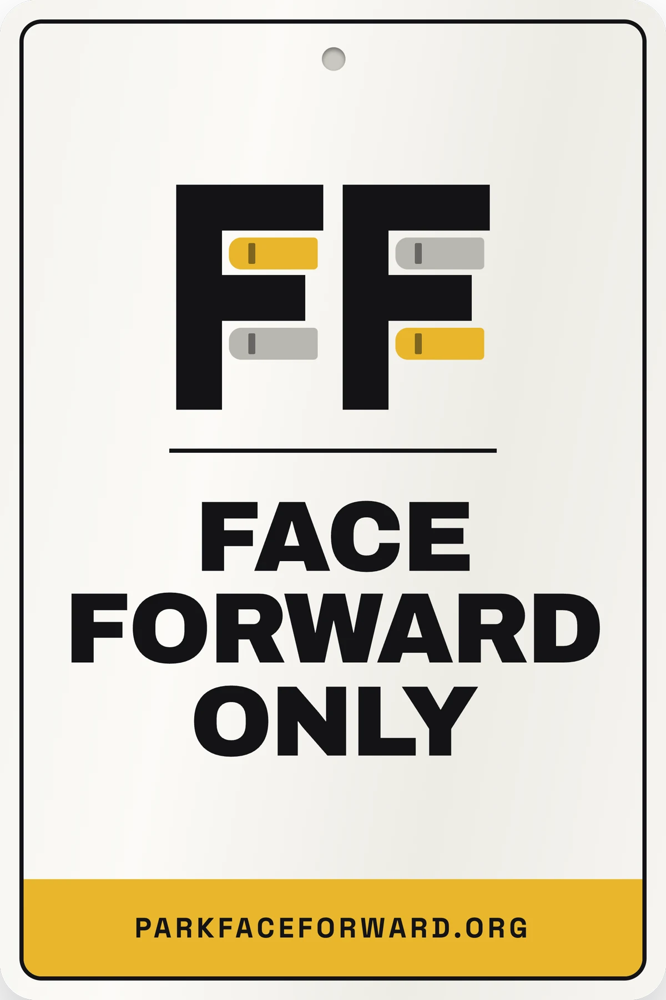

FlexGen — Chief Operating Officer
Leads operations across software, project delivery, and lifecycle services.
Working on technology at the intersection of AI, software, and the energy transition.
Over the course of my career I have helped turn complex technical systems into commercial products, build new technology strategies, and lead teams through periods of growth and transition.
Today I am particularly interested in how artificial intelligence will reshape our infrastructure and the software systems that coordinate it.
Leads operations across software, project delivery, and lifecycle services.
Helped launch and build a solar energy company focused on distributed energy solutions.
Developed technology strategy supporting the launch of a stock borrow and lending business line.
Method in practice

A question in an airport parking garage led me to test a familiar claim: is backing in actually faster? I used AI tools to build the analysis and publish the evidence—including where the detector missed its validation targets.
Across 548 observed parking and unparking events, nose-in parking averaged about 10 seconds less overall than reverse-entry.
I occasionally write about the evolution of energy infrastructure, software systems, and artificial intelligence.

An essay exploring how the evolution of the electric grid is increasingly driven by software, coordination, and system adaptability rather than physical infrastructure alone.

An explanation of what battery control software is, what it does, and why it's necessary

Why the move to agentic software is inevitable

Battery operators rely on knowing the state of charge accurately. Did you know it was an estimate?

Reflections on living through a transformative era in artificial intelligence and what it means for the future of technology and society.